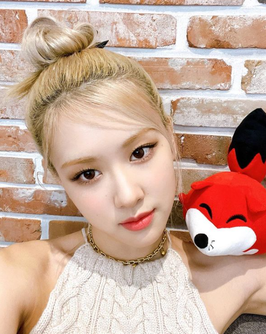
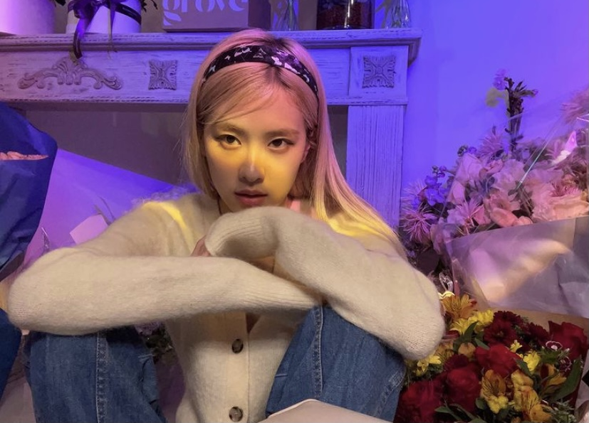
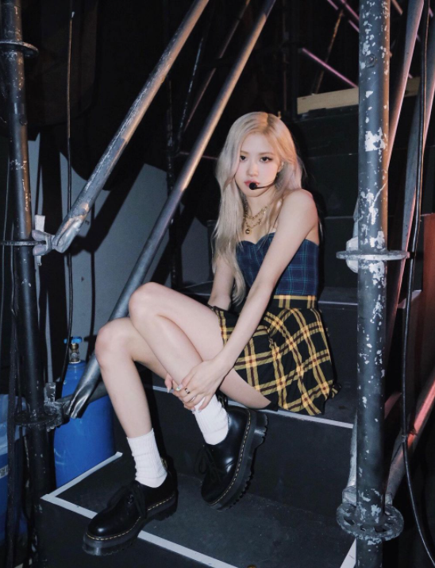

Park Chae Young





Stage name: Rosé
Birth name: Park Chae Young
Nicknames: Rose, Rosie
Position: Main vocalist, Lead dancer
Birthday: February 11, 1997
Zodiac sign: Aquarius
Birthplace: Auckland, New Zealand
Height: 5'6" (168.7 cm)
Facts:
- She was born in Auckalnd, New Zealand and raised in Melbourne, Australia
- She moved to Korea in 2012
- She trained for 4 years and 2 months
- She was the last member to be revealed
- She placed first in YG auditions in Australia
- She can speak Korean, English, and Japanese
- She prefers to be called by her real name
- She can play the paino and guitar
- She is left-handed
- She has a dog named Hank who has an Instagram (@hank_says_hank)
- She has a solo album: -R-